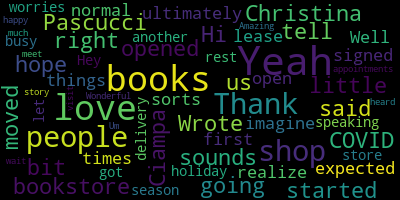

[Callahan]: Yeah. Hi, I am here with Christina Pascucci Ciampa. I hope I said that right.
[SPEAKER_00]: Oh, you sure did. Yes, thank you.
[Callahan]: Yeah, and she is with All She Wrote Books and is going to tell us a little bit about how she started the bookstore.
[SPEAKER_00]: Thanks so much. So my name is Christina Pascucci Ciampa. I'm the owner of All She Wrote Books here located at Assembly Row in Somerville. All She Wrote Books is an intersectional queer feminist bookstore that focuses on really celebrating and uplifting marginalized voices, voices that have been typically historically suppressed and also really finding ways to bring books that people can find themselves in. So we really strive to harness that as our mission. And we started as a pop-up bookstore. So it was an idea that came to me at the beginning of 2019. And we had our first pop-up with like 25 books at Bow Market, which is located in Union Square. And I didn't think I would sell a book at all. And we sold five that day. And I was like, oh, okay, this is a thing. And we just kept going and we kept partnering with other local businesses in the area, including Winter Hill Brewery. Juliet, which is an amazing restaurant in Union Square, and many others, JP Knit and Stitch, a few others. And then we also did markets. So you would find us at different local markets popping up throughout the greater Boston area. So that's how we got started. And we always knew we wanted to have a brick and mortar because ultimately we wanted to not only create a space where all of these amazing books could be curated, but also to create a safe space. for those to feel like, you know, who have either been shuttered out of their family lives or just in general by society, that they can always have a place to come and feel loved and respected as a person. And that to me is really important, but also then goes back to the other part that I was mentioning before about finding themselves within the books that we carry. So to me, that's really, you know, important. And so in 2020, very interesting year, we went down the path of opening a brick and mortar, obviously, in the beginning of it, because we had no idea there would be a pandemic on our hands. But we still moved forward. And we opened to the public on July 10 of this year, with obviously COVID protocols in place. And we've been open ever since. And we You know, I love what I do every day, and it's been an amazing journey thus far. Wow. Honestly, it's such a beautiful, it's really a beautiful, beautiful mission.
[Callahan]: I'm so moved. So it sounds like you opened during COVID. Yeah, ultimately. I imagine that you expected to open during normal times, like when you first signed the lease and those sorts of things you didn't realize.
[SPEAKER_00]: Yeah, so we had this conversation in January of 2020 with Assembly Row. It started in January. It was a hybrid concept of bringing the bookstore here and seeing how it would do and all the things and being infused in the community. And yeah, without any inclination of COVID, you know, went ahead, got our LLC, became like very official and all the things. And so we signed our lease at the end of February. I got keys in March. And then two days later, Governor Baker got on the television and was like, I'm so sorry, but non-essential retail is now officially closed. And I was like, We're not doing anything now. So it just meant that we were, you know, we were an online business at the moment. And so we did that from March till about April, May. And then we had the opportunity to partner with East Somerville Main Streets, which is a local nonprofit here that works with the small businesses in the area to ensure that they have the resources they need to conduct business, to be successful. It's a great organization. I'm proud to be a part of it as a business owner and as a resident of East Somerville as well. So they had the opportunity to do an outdoor market starting in May. So this gave us an opportunity, excuse me, an opportunity to try contactless pickup for the first time. And honestly, it was the best primer that we had, because then we took those same concepts and learnings that we had from that into the store, which is now what we do for curbside here today. And then once the state was like, oh, you can do retail curbside, I think it was at the end of May, we were like, okay, this is our window to come in and do the work. And so the work really was to get the space in the place that we wanted it to be. That meant making this beautiful rainbow wall that's behind me with the beautiful clouds, but also just like configuring the space, making sure that it was ADA compliant, making sure that anybody could walk in without any issues and also felt safe. So it was really an opportunity for us to test trial, you know, what, you know, how would we do walk-ins? Would we start with appointments? And we initially started with just appointments only. And then towards the middle of the summer, we decided to do a hybrid. So during slower days, we allow for walk-ins, but on a very small number basis. And continued to do that, but obviously pushed for online in-store appointments, which allow people to have private, ultimately, private shopping appointments within our store for more than 30, for 30 minutes, which was the kind of recommended timing that I saw other bookstores doing and felt like that was kind of like a nice time frame to be inside a place and not to necessarily, you know, fear the fear of being in there. And so really just kind of like, and constantly pivoting. And then we also had our online store as well. And that has been very active both in March, even now, obviously. And we continue to balance both the in-store aspect of it, but also ensure that our customers are getting the same experience or somewhat of the same experience that they would if they were in-store. I write handwritten notes with every single order that I get. It's my way of connecting, just as much as it would be if a person walked in the door right now for an in-store browsing appointment. It's that connection. It's that human connection, but obviously in a safe and smart manner. And I think that is really important. And that's how we've been able to, to do what we do and continue to, to be in existence in 2020, which is, you know, obviously we've seen, unfortunately, a lot of small businesses not make it this year and it's, it's extremely sad and unfortunate, but, um, you know, I'm thankful for every opportunity and this journey thus far, and we'll see where it takes us as we move forward in with the rest of 2020, but also moving into 2021.
[Callahan]: Well, speaking of the rest of 2020, we are in the holiday season and people love books.
[SPEAKER_00]: Yes.
[Callahan]: And how can, how could people shop with you?
[SPEAKER_00]: Yeah, there's several ways that you can shop with us. So everything that we have in inventory in store is available on our website, allshewrotebooks.com backslash bookstore. We pretty much at this moment, December 15th, If you are going to ship across the United States, we recommend that you get your orders in for USPS priority between today and tomorrow. Otherwise, it will not make it for Christmas. We can't guarantee any kind of shipping times at this point, but that's just a gentle reminder that if you do need to ship stuff, And it will ultimately be at an expedited shipping cost. So just keep that in mind. Now, let's say, you know what? Your gifts are being dropped off around the corner from your neighbor or a family member or whatever it is. We offer curbside pickup as well. So that is also available on our website. It's part of the dropdown feature in the checkout process, which is super simple. It's free. You do not need an appointment to come and pick up your books. You can just text us 10 minutes before you arrive at our store phone number and let us know that you're on your way with your order number and we'll have it ready for you within 10 minutes to pick up. So we, curbside pickups, orders, we fulfill within 24 to 48 hours. So we just ask customers to wait on us to let you know when your book order is ready. So we just recommend that. And we are constantly updating our inventory online. So whatever is in store. is also online, which is great. So if you're not comfortable coming in the store, that's OK. We have ways for you to still support us and to be able to gift very special book gifts or other gifts that we have. We also have cards. We also have ornaments. We have other types of maker items that you can purchase and send to your loved ones. The last and final thing is obviously in-store browsing appointments. And what are your hours? Our hours of, can you pause it? I'm sorry. I didn't realize that was going to happen. I knew it would happen.
[Callahan]: Hey, no worries. You got another delivery of books. You're busy.
[Callahan]: But let me. In-store appointments.
[SPEAKER_00]: Yes. So in-store appointments. So we offer private in-store browsing appointments during our hours of operation. So we are open. Tuesday and Wednesdays, 12 to six, we're open Wednesday, Thursday through Saturday, 11 to seven, and Sundays, 11 to two and that's for the rest of the holiday season up until Christmas Eve, Christmas Eve we are closing at five. you can easily book your appointment online at allshearbooks.com backslash book dash online, which is a very easy process. It's a 30 minute browsing appointment where you get pretty much my undivided attention for 30 minutes. Or if you're the type of person that's like, I want to be amongst the shelves by myself, you can do that as well. So it's totally up to you, but it allows for you to feel safe while browsing.
[Callahan]: I haven't heard of that.
[SPEAKER_00]: Yeah, it's it's not something that a lot of the bookstores do around here, and which is okay you know it's everybody has their own different ways of doing things, and it's totally fine I, you know, the only other one that does it that I'm aware of is paper cuts and JP. So anyways, with that being said, it's a private shopping appointment. You can also, for example, I've had customers that have decided to order things online, pick them up and do additional browsing as well, which you can totally do. It's up to you. And we can make that happen for you as well. And also, if you're just a type of person that's like, I don't want to deal with booking an appointment online. I'm not an email person. That's okay. Call the store. If you have any questions, we're at 6 1 7 4 4 0 4 6 2 3 during our business hours. Uh, which again are Tuesday through Wednesday, 12 to six Thursday through Saturday, 11 to seven. And on Sunday is from 11 to two.
[Callahan]: Amazing. I'm so happy to meet you. I love, I love your story. Um, I can't wait to visit your shop. Thank you. Yeah. Wonderful. Thank you so much.
[SPEAKER_00]: Thank you very much. And thanks so much for this opportunity. And again, for those of you who want to learn more about All She Wrote Books, our mission, what we do, what we have in store for all your book needs, go to allshewrotebooks.com. Thank you so much for your time today. I really appreciate it. You bet. All right. Thank you.
|
total time: 0.94 minutes total words: 153  |
|||
{kind=link}